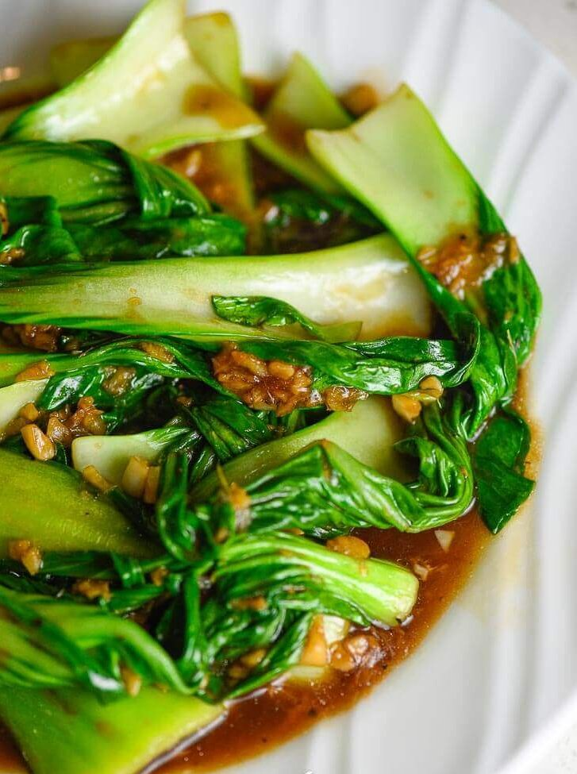

Simple and Easy Stir Fry Pakchoy Recipe

Description:
Here is simple way to cook pakchoy. Pokchoy has other names; bokchoy, pokchoy,etc.
Ingredients:
- Around 5 bunches of pakchoy/bokchoy
- Ginger as you wish
- Garlic as you wish
- Oyster Sauce
- Cooking Oil
Steps:
- Make a grounded garlic
- Chop the ginger into slices
- Heat a wok or a pan
- Then pour pokchoy into it with nothing
- Stir it until couple minutes, then take them out.
- Now pour the cooking oil into the pan/wok, and cook the grounded garlics and sliced of gingers
- Pour pakchoy, stir it then add Oyster Sauce
- Stir fry couple minutes, then done!
Home